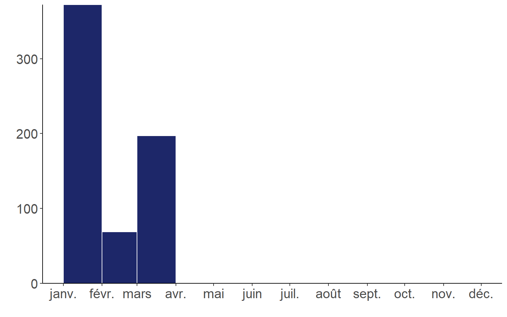
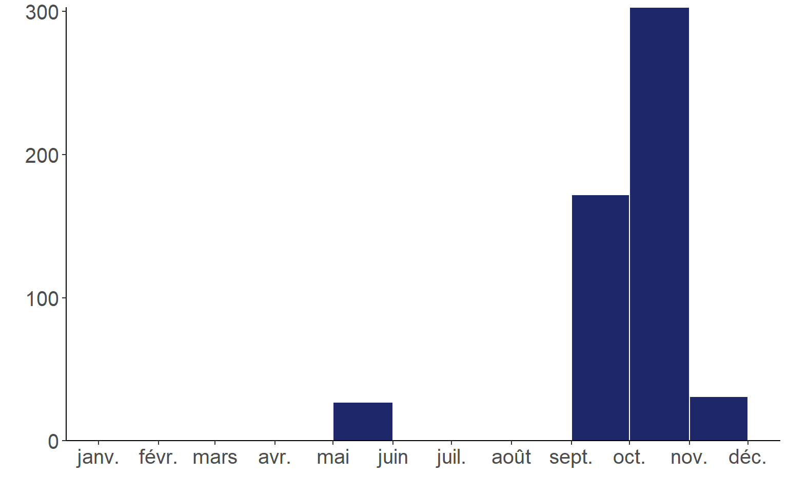
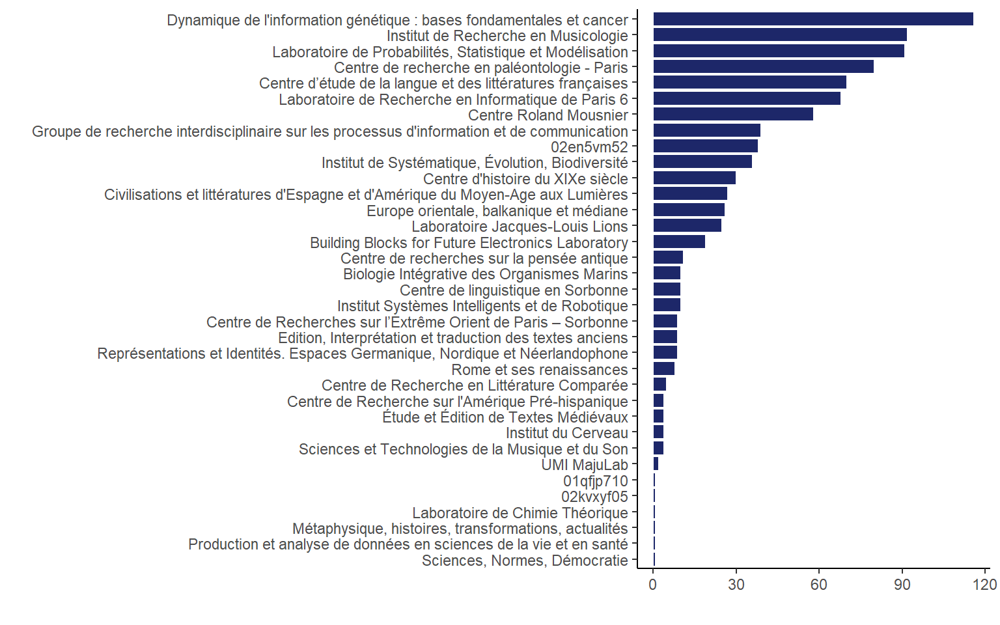

Work Magnet monitoring
Vue globale
Activités GT OpenAlex
Structures de recherche
Demandes de correction soumises
1171
Demandes traitées
935
Demandes en cours
236
Demandes de corrections soumises (par mois)
2025
2024


Expand
Publications récupérées (par institutions de recherche)
Expand
Demandes de correction (par institutions de recherche)
Expand

Expand
Expand